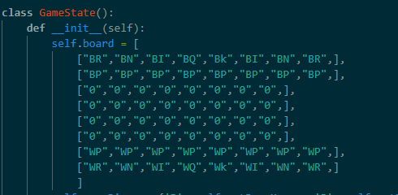

AI Chess Bots

Introduction
I was always interested in AI and learned a lot about neural networks and min-max algorithms. However, it was hard to implement these ideas without a proper game so I decided to create a python chess program. I specifically created a chess game over simpler games like checkers because I could experiment with more complex types of AI programs using my knowledge and skills in chess.
I was still new to using python to create a game so I used this youtube series to help with the basic template for the chess game.So, the code for the board creation is largely based off of the code in the video. I am showing some of it again here as context for the later Bot part. However, the later algorithms are my own code.
Creating the Game
Board
This is the code for creating the squares on the board. It draws a new rectangle and shifts its location and color based on the column and row numbers.

All of the piece information is stored in a 2d array that is later transformed into pieces. I am using a 2D array because it lowers the processing time for the bot and is easy to read.
Then based on the array each string is mapped to a png of that piece which allowed all the pieces to show up in the order of the list.
So, at this point I have the piece location and the board is ready.
Piece Movement
These next two methods control the movement of all the pieces allowing them to move to any square. It achieves this by saving the array location of the first click and editing the 2D list with the location of the new click.


These functions then restrict the moves for each kind of piece by only editing the list when the click is on the correct square. This is done by using array position to determine adjacent and diagonal moves from the original piece. By separating these two functions it is easier to use these piece rules to control the bot.

This is what the code looks like to control the rook and knight moves.
ValidMove then further restricts moves by not allowing pieces to move when the king is in check and other restrictions. I can use this method along with the previous to define the rules for the bot.

This function translates the row and column moved into chess notation. This so so I can have an easy way to represent the bot's games.

Machine Learning
This causes the bot to choose any available move randomly by choosing one of the previously created available moves. It's used when it cannot find a move.

The function is the most important factor in deciding the bot's move. It uses a basic Min-Max algorithm to detect the best move which maximizes the bot's score while reducing the opponent's min score. I do this by finding all possible moves and creating individual boards for all of them and finding all moves in each of those scenarios. I repeat that until the bot can think 6 moves in advance and then I compare all the boards to find the most points the bot can get if the other player plays perfectly to find the correct move.

As you can see in the video there is still a lot of improvement to be made. The random move works decently in the end game, but in the beginning, you can see that the king moved forward which is not a good move. It also did not consider checking and it always took a better piece when offered which is not always the best move.
I am still currently working on this project. I still want to introduce alpha-beta pruning so the code can quickly calculate several moves ahead. I also am currently adding more specific weights to each movement emphasizing openness, future moves, and common strategic positions.
Mechanical Design AI Mechanical Engineering Electronics